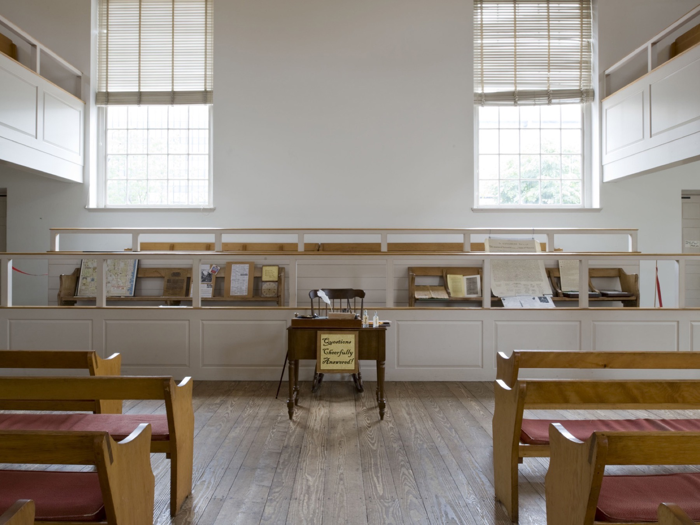

为什么一个宗教群体发展出一种独特的决策法？
17世纪的会友很快就遇到现实问题：救济受迫害者、婚姻、教育、旅行传道、财务、纪律与公共行动都需要组织。但一个强调“内在引领”的群体，怎样避免又建立一个由外部权威支配的制度？
由此逐渐形成 敬拜式议事（Meeting for Worship for Business）：议事不是从敬拜中抽离出来的世俗事务，而是在同一种共同聆听与明辨中处理具体事项。

议事并不需要“董事会式”的空间
这是费城自由贵格会聚会所（Free Quaker Meeting House）的历史建筑内部，并不是某一次议事会（Business Meeting）的现场照片。它在这里作为空间史料出现：贵格会共同体生活（Quaker corporate life）长期在朴素、可彼此看见的环境中处理敬拜与公共事务。
图像作者／来源：美国国家公园管理局（U.S. National Park Service） · 授权：美国公有领域（Public domain, U.S.） · 查看原始来源 ↗重点不是“更快表决”，而是辨认群体是否真的清楚到可以行动。
表决、共识与聚会的共同辨识
帕特里夏·洛林（Patricia Loring）特别强调，贵格会的合一不是意见完全一致（agreement）、普通共识（consensus）、妥协（compromise）或最低共同点。不同意见仍可能存在，但群体可能对“现在应该怎样前进”出现更深的共同清晰。
书记（Clerk）：不是主席
通常负责控制议程、分配发言、维持程序，必要时推动表决。
准备议程并照看秩序，但关键任务是听整个聚会：辨认何时接近清晰，并尝试把正在形成的共同辨识（emerging sense）写成决议纪要，交回群体检验。
因此书记（Clerk）的权威不是“我决定”，而是“我试着说出我听见这个聚会正在形成的东西”。如果群体认为措辞不对，决议纪要就继续修改，甚至整个议题被推迟。
互动案例：12个人要不要搬迁社区空间？
情境：租约即将到期。新空间更大、更便宜，但离原社区 4 公里。12位核心成员中，7人赞成、3人反对、2人不确定。
你会怎么处理？
什么时候“不决定”反而更成熟？
布林顿（Brinton）记录，会友在重大议题上可能长时间等待合一。这个传统很容易被现代组织理解成低效率，但它提醒我们：“做出决定”与“真正清楚”不是同一件事。
当然，现实并非所有事项都能无限等待。成熟实践需要区分：哪些只是执行层面的例行事务（routine business），哪些会伤及共同体、使命或重大价值，需要更多时间。
决议纪要（Minute）：不是会后整理，而是现场检验
贵格会议事中的决议纪要常常在现场形成。书记（Clerk）尝试把自己听见的正在形成的共同辨识（emerging sense）写成一句或几句清楚的文字，再读回给聚会。这个动作非常重要，因为“感觉差不多了”会被迫转化为具体语言。
文字一旦不准确，隐藏的分歧就会显现出来。于是决议纪要既是记录，也是检验工具：群体是在认可同一个方向，还是只是在各自脑中认可不同的东西？
一场 90 分钟议事会（Meeting for Business）的简化模板
这是现代学习用模板，不是贵格会统一规定。